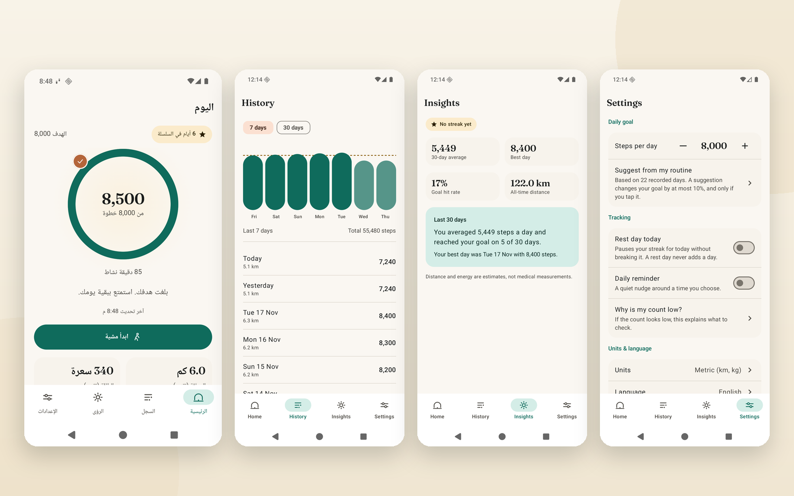
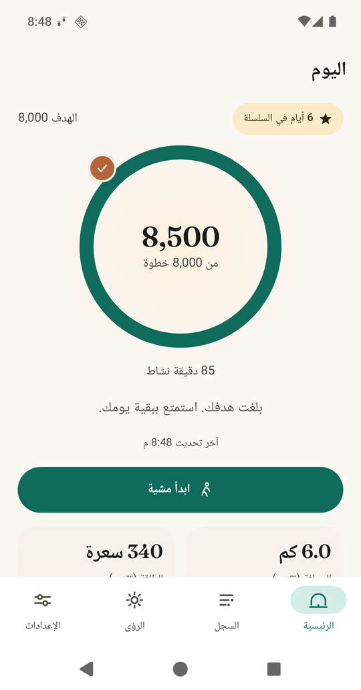
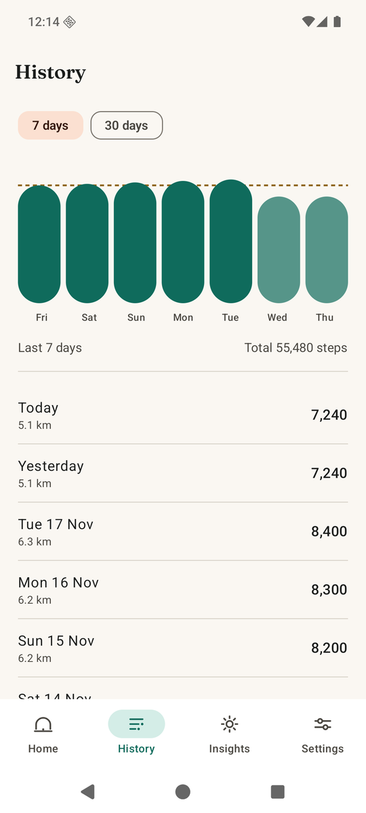
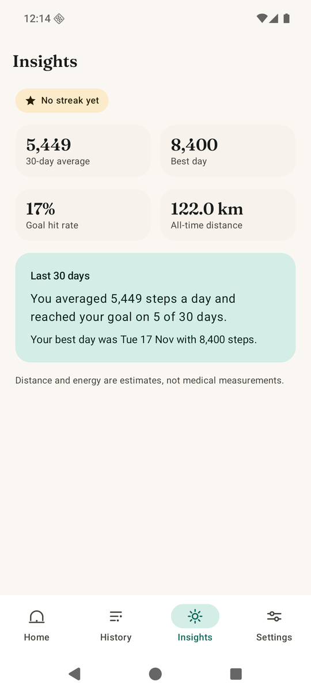
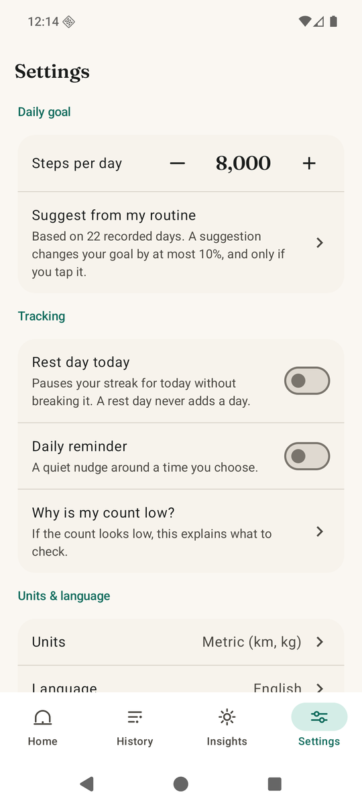

دون إنترنت بالتصميم
لا يحتوي ملف البيان المدمج على الإذن android.permission.INTERNET. وهذا ليس مفتاحًا يمكن أن يعيده تحديث لاحق: لا يوجد رمز اتصال بالشبكة ولا خادم يُتحدَّث معه. كل خطوة تبقى في التخزين الخاص على الهاتف.
Sabeel سبيل عدّاد خطوات يعمل دون إنترنت على أندرويد
عدّاد خطوات ومتتبّع مشي هادئ يعمل دون اتصال، ودون حساب، ودون معرّف إعلاني. يضيف الإصدار 1.3 مفتاح تشغيل وإيقاف حقيقيًا للعدّ، وجلسات مشي أو جري مخصّصة — ومع ذلك يبقى التطبيق عاجزًا عن إرسال بياناتك إلى أي مكان.

لماذا وُجد سبيل
معظم عدّادات الخطوات مجانية لأن حركتك هي الثمن. يقترح سبيل الصفقة المعاكسة: أن يفعل أقلّ في الخفاء، وأن يقول بصراحة ما لا يستطيعه.
لا يحتوي ملف البيان المدمج على الإذن android.permission.INTERNET. وهذا ليس مفتاحًا يمكن أن يعيده تحديث لاحق: لا يوجد رمز اتصال بالشبكة ولا خادم يُتحدَّث معه. كل خطوة تبقى في التخزين الخاص على الهاتف.
لا حِزَم إعلانات، ولا تحليلات، ولا تقارير أعطال، ولا تسجيل دخول. لا شيء تلغي الاشتراك فيه، ولا معرّف إعلاني تسلّمه لأحد. يمكن فحص نسخة الإصدار؛ وقائمة الاعتماديات علنية.
إذا أوقف أندرويد أو صانع الهاتف العدّ في الخلفية، يسجّل سبيل ما حدث عند الإقلاع ويعرضه في «التشخيص». لا يدّعي أن العدّ «لا يتوقف أبدًا»، لأن هذا الوعد لا يمكن الوفاء به على أندرويد.
تأتي الواجهة كاملة بالإنجليزية والعربية مع تخطيط من اليمين إلى اليسار. النصوص العربية مترجمة، لكن مراجعة متحدّث أصلي ما زالت معلّقة، وهذا الموقع يذكر ذلك بدلًا من إخفائه.
ما الجديد في الإصدار 1.3
كل ما يلي يعمل دون اتصال. لا شيء فيه يحتاج في الخفاء إلى حساب أو خدمة مزامنة أو طلب شبكة.
اضغط الحلقة في الشاشة الرئيسية، أو شارة الحالة تحتها، أو المفتاح في الإعدادات — إنه المفتاح نفسه المحفوظ. وإذا أوقفت العدّ يبقى متوقفًا بعد إعادة التشغيل.
يعمل عدّاد الخطوات العتادي وكاشف الخطوات معًا. ويمكن لـ Health Connect أن يضيف حدًّا أدنى للقراءة فقط متزامنًا مع الساعة، ولا يملأ تقدير مقياس التسارع المُعلَّم إلا الجزء الذي لم يره مصدر مقيس.
بعد إعادة التشغيل يسجّل سبيل المحاولة — الأذونات، والمستشعر، والنتيجة، وهل كانت الخدمة حيّة بعد الفحص — ثم يحاول استئناف العدّ. تعرض «التشخيص» آخر عشر محاولات، ويمكن مشاركة تقرير نصي بلا بيانات موقع أو أماكن.
اختر مشيًا أو جريًا، وهدفًا اختياريًا بالوقت أو الخطوات أو المسافة أو المكان، وهل ترسم المسار. الإيقاف المؤقت يجمّد مؤقّت الجلسة وخطواتها دون احتساب رجعي، والجلسات التي تعبر منتصف الليل تُقسَّم إلى أجزاء. جلسة واحدة في كل مرة.
احفظ مكانًا باسم وإحداثيات ونطاق — بلا بحث عن عنوان، وبلا تحويل جغرافي، وبلا تنزيل خريطة. واحفظ إعداد جلستك المعتاد وابدأه بلمسة واحدة.
عرض لسبعة أو ثلاثين يومًا مع خط هدفك، والقائمة اليومية والجلسات المحفوظة؛ ومتوسطات النافذة وأفضل يوم ونسبة بلوغ الهدف وإجمالي المسافة في «الرؤى». أيام الراحة توقف السلسلة مؤقتًا دون كسرها.
تذكير هادئ عبر WorkManager في وقت تختاره، وإشعار عند بلوغ هدف اليوم، وإشعار استرداد واحد على الأكثر إذا لم يستطع العدّ الاستئناف بعد الإقلاع.
اكتب الإجماليات اليومية بصيغة CSV، أو كل الجلسات بصيغة CSV، أو جلسة واحدة بصيغة GPX عبر منتقي الملفات في أندرويد. لا يُرفع شيء؛ والملف يذهب فقط إلى حيث ترسله.
اقرأ هذا قبل التنزيل
هذه الحدود حقيقية. وهي ثمن تطبيق لا يستطيع الاتصال بالخارج، والإنصاف أن تُقال هنا لا أن تُدفن في صفحة متجر.
الخصوصية
لا يوجد حساب تنشئه، ولا خادم يحتفظ بنسخة من مشيك. النسخ الاحتياطي السحابي في أندرويد متوقف لتطبيق سبيل، فلا تنتقل بياناته إلى نسخة احتياطية أيضًا. تغطي السياسة المنشورة بدقة ما يُخزَّن، وكل إذن ولماذا يُطلب، وكيف تحذف كل شيء.
السياسة منشورة بالإنجليزية والعربية على هذا الموقع نفسه. وHealth Connect اختياري وللقراءة فقط؛ ولا يكتب التطبيق فيه أبدًا.
الشاشات
لقطات حقيقية من الواجهة أثناء الاختبار — ليست تصاميم ولا إطارات أجهزة. أُخفيت ملاحظة «لا يوجد مستشعر خطوات» الخاصة بالمحاكي من لقطات الرئيسية الثلاث، ويوضّح التعليق أدناه السبب.







لقطات من محاكي أثناء اختبار الإصدار في نوفمبر 2026. صورة API 36 ATD ليس فيها مستشعر خطوات عتادي، لذا حُقنت قيم خطوات اليوم عبر مستقبل الخطوات في نسخة التصحيح. هذه ليست دعوى تشغيل على جهاز فعلي للإصدار 1.3، وقد تختلف الشاشات قليلًا في البناء التالي. وقد أُخفيت ملاحظة «لا يوجد مستشعر خطوات» التي يعرضها المحاكي على الرئيسية من اللقطات أعلاه؛ وعلى هاتف لا يملك ذلك المستشعر يعرضها التطبيق فعلًا (اللقطات غير المعدّلة موجودة في README).
الأسئلة الشائعة
لا. لا يحتوي ملف بيان أندرويد المدمج على إذن INTERNET، ولا يشحن التطبيق أي رمز شبكة أو إعلانات أو تحليلات. وضع الطيران لا يغيّر شيئًا. المرة الوحيدة التي يتصل فيها الهاتف بالإنترنت لأجل سبيل هي عندما تختار أنت تنزيل تحديث من GitHub أو من متجر — لا من داخل التطبيق أبدًا.
ليس بعد. الإصدار 1.3.0 مبني وموقّع ومقيس (2026-11-23)، لكن لم يُرفع شيء إلى Google Play ولا تُدَّعى أي موافقة. الشيفرة المصدرية وملفّا APK و AAB على GitHub.
لا — ولا يستطيع أي تطبيق أندرويد ذلك. الإيقاف القسري يوقف العدّ حتى تعيد فتح سبيل؛ ومديرو البطارية المتشددون قد يوقفون الخدمات في المقدمة أيضًا. يسجّل سبيل كل محاولة إقلاع ويعرض النتيجة في «التشخيص» بدلًا من ادّعاء أن اليوم مكتمل.
الموقع اختياري وفي المقدمة فقط. يُستخدم فقط أثناء فتح شاشة الجلسة لرسم مسار على لوحة التطبيق نفسه — بلا بلاطات خرائط وبلا بحث عن عنوان. لا يوجد إذن موقع في الخلفية. وإذا رفضت، فسيظل المشي متتبعًا بالخطوات.
التعرّف على النشاط (لعدّ الخطوات)، والإشعارات (التذكيرات وإشعار التتبّع الجاري)، وموقع اختياري في المقدمة لرسم مسار، والتشغيل عند الإقلاع للتذكيرات والعدّ. وHealth Connect إضافة اختيارية للقراءة فقط. تبقى البيانات في التخزين الخاص بالتطبيق، والنسخ الاحتياطي السحابي متوقف، و«حذف كل البيانات» يزيلها.
نعم. مرخّص بموجب Apache-2.0، بلا إعلانات وبلا مشتريات داخل التطبيق، والشيفرة الكاملة علنية على GitHub — بما في ذلك ملف البيان الذي يُظهر غياب إذن INTERNET.
ليس بعد. الواجهة وهذا الموقع مترجمان بالكامل، لكن المراجعة العربية الأصلية لم تحدث بعد؛ وهي شرط مسبق قبل إدراج النسخة العربية. وإذا بدت عبارة ركيكة فهذه الملاحظة مفيدة فعلًا.
التنزيل
بُني ووُقّع وقيس في 2026-11-23. التنزيل من GitHub؛ ولا توجد صفحة متجر بعد.
حزمة APK موقّعة بمفتاح الرفع الخاص بالمشروع. بعد التنزيل، قارن الملف بقيمة SHA-256 أعلاه باستخدام sha256sum.